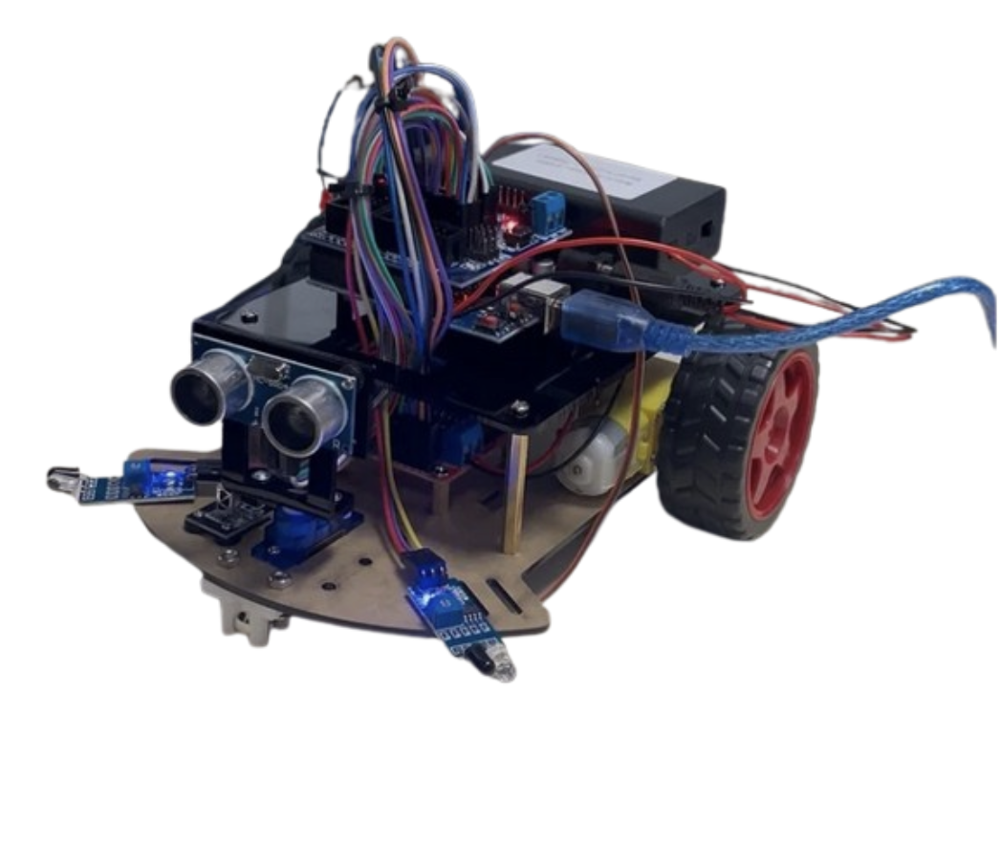
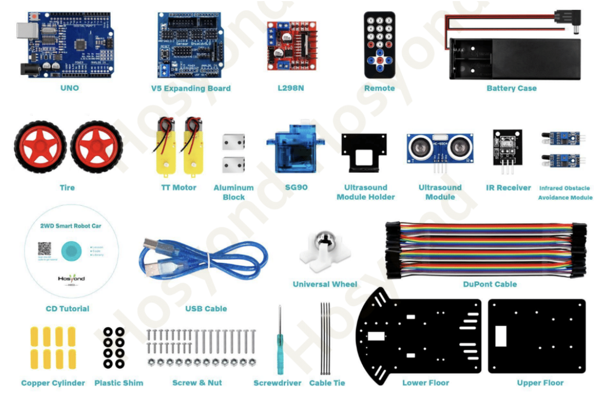
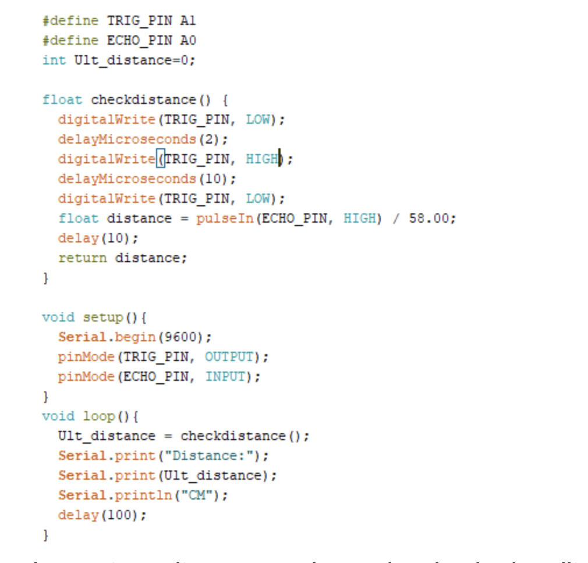
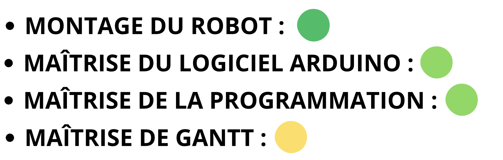
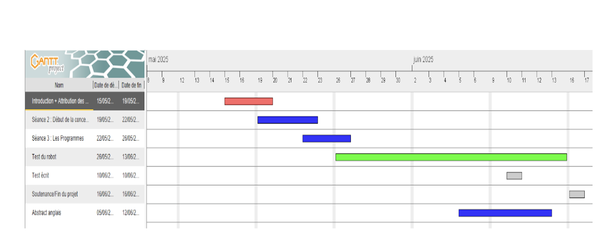

Contexte :
- Ce projet constitue une initiation aux systèmes embarqués à travers la programmation d'une carte Arduino UNO. L'objectif principal était de concevoir et de piloter un robot à deux roues motrices capable d'évoluer de manière autonome dans son environnement.
Logiciels et outils :
- Le projet repose sur l'utilisation d'un kit robotique Arduino piloté via le logiciel de développement Arduino IDE. La nouveauté dans ce projet a été la mise en place d'un diagramme de Gantt pour structurer le projet.
Ressenti :
- Au début, je pensais qu'il suffisait de monter le robot et de le programmer pour que tout soit terminé. Mais j'ai vite compris que ce projet allait être un vrai défi technique. Même si la base du code nous était donnée et qu'on a apporté des modifications correctes, le robot refusait d'avancer. Ça a été un véritable casse-tête de comprendre pourquoi le logiciel et le matériel ne communiquaient pas bien ensemble. Cette expérience m'a appris qu'en robotique, avoir un code sans erreur ne suffit pas ; il faut savoir diagnostiquer chaque branchement et chaque composant pour que tout fonctionne. Côté organisation, nous avons dû réaliser un diagramme de Gantt. Finalement, l'exercice n'était pas si compliqué.
Auto-Évaluation
Conclusion :
- Pour conclure, vous trouverez ci-contre le planning Gantt que nous avons suivi pour structurer nos étapes. Si le projet en lui-même n'était pas d'une complexité extrême, le plus grand défi a été de gérer le stress lié à la recherche de la "faille". Qu'il s'agisse d'une erreur dans le code ou d'un faux contact dans le montage, trouver pourquoi le robot ne réagissait pas a été un véritable challenge de patience. Finalement, grâce à une bonne cohésion avec mes collègues, nous avons réussi à identifier les problèmes et à terminer le projet exactement dans les temps.